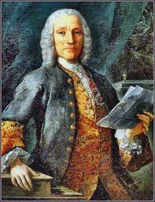
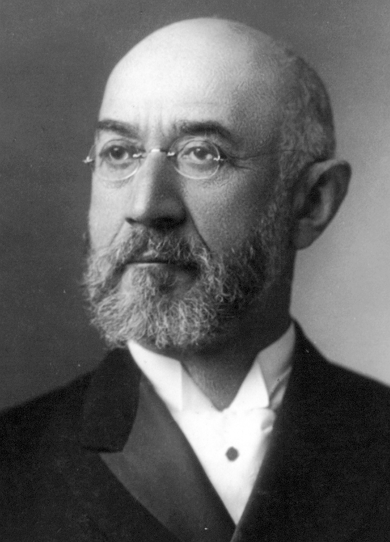

I.S.Bach

Йо́ганн Себастья́н Бах (нім. Johann Sebastian Bach; 21 (31) березня 1685, Айзенах — 28 липня 1750, Лейпциг) — німецький композитор, органіст, клавесиніст і скрипаль, представник стилю бароко, один із творців світової музичної класики, вважається одним із найвидатніших композиторів світу. Його роботи давали натхнення майже кожному композитору Європейської традиції, від Моцарта до Шенберґа. Він узагальнив досягнення музичного мистецтва перехідного періоду від бароко до класицизму, а в майстерності поліфонії і контрапункту не мав собі рівних серед тогочасних музикантів.
Full biogaphyD.Scarlatti
Доменіко Скарлатті народився у Неаполі в сім'ї відомого композитора Алессандро Скарлатті. Брав уроки таких композиторів як Гаетано Греко, Франческо Гаспаріні і Бернардо Пасквіні. З 1701 року працював у королівській каплиці. У 1704—1708 роки жив у Венеції, з 1709 року — у Римі придворним музикантом польської королеви у вигнанні Марії Казимирі. Брав участь у змаганні виконавців, був визнаний найкращим клавесиністом за Генделя, проте поступився йому у вправності гри на органі. У ці роки написав ряд опер для приватного театру Казимири. З 1715 по 1719 рік був капельмейстером у соборі Святого Петра, і в останній рік він виїхав у Лондон, де поставив свою оперу «Narcisco» в королівському театрі.
Full biogaphyJ.Straus
Ісидор Штраус народився 6 лютого 1845 року в німецькому місті Оттерберзі в єврейській родині. Він був старшим із п'яти дітей у сім'ї Лазаря Штрауса та його другої дружини Сари. У 1854 році разом із сім'єю іммігрував до США і влаштувалася в місті Телботтон у штаті Джорджія, де вони відкрили магазин.З початком Громадянської війни США Ісидор спробував вступити до лав армії Конфедеративних Штатів Америки, але через малий віку (йому на той час було 16 років) на війну його не взяли. У роки війни він працював клерком у магазині батька на заміні співробітників, що пішли воювати, а потім був представником сімейного бізнесу в Англії. Після закінчення війни вся родина переїхала до Нью-Йорку, де Ісідор з братом Натаном організували власний бізнес із продажу посуду в універмазі «Macy's».
Full biogaphyV.A.Mozart

Вóльфганг Амадéй Мóцарт повне ім'я Йоганн Хризостом Вольфганг Теофіл Моцарт нім. Joannes Chrysostomus Wolfgangus Theophilus Mozart; 27 січня 1756 — 5 грудня 1791) — видатний австрійський композитор і музикант-віртуоз. Один з найпопулярніших класичних композиторів, Моцарт зробив великий вплив на світову музичну культуру. За свідченням сучасників, Моцарт мав феноменальний музикальний слух, пам'ять і неперевершену здатність до імпровізації.
Full biogaphyA.Vivaldi

Анто́ніо Лучіо Віва́льді (італ. Antonio Lucio Vivaldi; 4 березня 1678, Венеція, Венеційська республіка — 28 липня 1741, Відень, Габсбурзька монархія) — італійський композитор, скрипаль-віртуоз, римо-католицький священник, автор більш як сорока опер, кантат, ораторій, творець жанру сольного інструментального концерту. Вважається одним з композиторів, що почали розвивати музику барокового стилю до класицизму. За життя отримав широке визнання по всій Європі.
Full biogaphy